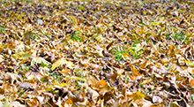
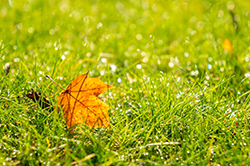

With every fall comes the common debate among homeowners: should you leave your leaves where they fall, or should you gather them up? As a trusted Monmouth County tree company, Ben Bivins Tree Experts hears this question a lot throughout the autumn months. Homeowners want healthy grass, healthy trees, and a clean landscape, but they also do not want to work against nature. Both sides have valid points. Some people prefer to remove every leaf, believing this is the only way to maintain neat, healthy landscaping. Others prefer to work with nature and let fallen leaves become part of the ecosystem. The best choice often depends on your property’s conditions, what type of trees you have, and how you want your landscape to look in the winter. With so many opinions circulating online, it helps to explore both sides so you can make an informed decision.

The Case for Leaving the Leaves
There is a growing movement encouraging homeowners to leave fallen leaves on the lawn. Environmental groups and many horticulture experts say leaf litter can provide several natural benefits.
- When leaves break down, they create a nutrient-rich mulch that feeds the soil. This organic material encourages stronger root systems for your grass and helps beneficial insects overwinter safely. Many native pollinators rely on leaf litter during the colder months, making it an important part of maintaining a balanced landscape.
- Leaving the leaves can also help regulate soil temperature. A thin layer acts as insulation on those colder nights, reducing stress on grass roots. Additionally, allowing leaves to remain in garden beds can help conserve soil moisture. For residents who prefer a lower-maintenance yard, this option can save time and reduce the need for purchased mulch in the spring.
However, even the most eco-friendly Monmouth County tree company will tell you that this approach works only when done correctly. Too many leaves left to mat and pack down will create an entirely different problem.
When Leaving Leaves Becomes an Issue
A thick, soggy layer of leaves blocks air and sunlight from reaching your grass. This leads to a variety of issues including mold growth, bare patches, and weakened turf that struggles to grow. Leaves that remain wet for long periods become heavy and compacted, creating exactly the kind of environment where fungi thrive. Once mold moves in, it spreads quickly and can be tough to control.
For lawns in shady areas or for properties that receive large quantities of leaves every autumn, leaving them alone may do more harm than good. The more leaves fall in one area, the faster they layer together. Over time, this creates a barrier that suffocates the lawn beneath it. In these cases, cleaning them up is the better choice for long-term grass health.
Certain tree species also produce leaves that break down slowly and in dense clusters.
Oak
- Leaves decay very slowly
- A single large oak can drop enough leaves to smother an entire lawn
Maple (Especially Norway Maple)
- Leaves are large, thick, and prone to matting
- Norway Maples in particular produce heavy leaf cover that decomposes slowly
Beech
- Leaves are waxy and papery, resisting moisture and microbial breakdown
- Leaves often stay intact well into winter
Sycamore / London Plane Trees
- Very large, tough leaves that stay whole long after they fall
- Leaves tend to pile up and form dense layers
Sweetgum
- Leaves are thick with a glossy surface that slows decomposition
- Drop tons of spiky seed pods that mix into the leaf layer
Hickory
- Leaves are thick and can stay leathery for weeks or months
- Produce a heavy blanket under the tree
Chestnut (Horse Chestnut in particular)
- Leaves are large and fibrous, taking a long time to break down
- They often clump together after rain
Magnolia (Southern Magnolia)
- These evergreen leaves are extremely thick, almost rubbery
- They decompose very slowly smothering anything beneath them

The Benefits of Clearing Leaves
Removing leaves entirely is never the “wrong” choice. Clean-up creates a tidy appearance and promotes healthy spring growth. When leaves are cleared away, grass continues to receive sunlight which keeps it stronger heading into the cold season. Beyond lawn health, leaf removal helps reduce moisture buildup around tree trunks and also prevents rodents from nesting too close to your home. Additionally, it helps reveal issues like low branches, dead limbs, or storm damage that may be hidden under debris. Cleaning up leaves also provides material for composting. Rather than stuffing bags or waiting for pickup, you can repurpose leaves into useful, nutrient-rich compost for your spring garden beds. As a Monmouth County tree company, we know that when done properly, composting saves money and supports a more sustainable landscape.
Monmouth County Tree Company Says a Middle Ground is Best
You do not need to choose between leaving the leaves and removing every last one. Many homeowners find the best solution is a combination of both. Leaves on the lawn can be mulched into smaller pieces with a mower. When shredded, they break down much faster and will not smother the grass. This option gives you the environmental benefits without the heavy layer that leads to mold.
In garden beds or in natural areas of your property, leaving leaves is often safe and beneficial. In high-traffic or shaded areas with thick coverage, cleaning the leaves will protect your grass and prevent long-term damage. Every property is different, and the right approach depends on factors like the number of trees, the type of leaves, and your lawn’s health.
If you are unsure which approach is right for your yard, Ben Bivins Tree Experts can help. As a leading Monmouth County tree company, we can evaluate the needs of your landscape, recommend seasonal care, and help you keep your trees and lawn in excellent condition year-round.